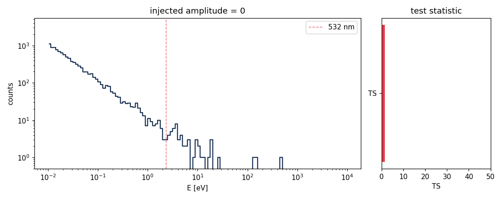

Scoring¶
The test statistic¶
For each exotic template T in the library, we fit two hypotheses to the same
spectrum:
M_nat: the natural mixture (blackbody + reflection + power-laws + lines). Nuisance parameters are profiled out — maximized over.M_alt = M_nat + T: same mixture plus the template.T's amplitude is free; everything else (its center energy, shape) is locked.
The per-template test statistic is
The score for the source is max_T TS_T — the strongest template wins.
sequenceDiagram
autonumber
participant User
participant LT as loeb_turner_score
participant Fit
participant Lib as exotic_library
participant Trials as gross_vitells_global_p
participant Res as ScoreResult
User->>LT: (spectrum, natural_components)
LT->>Fit: Fit(Mixture(natural), spectrum).run()
Fit-->>LT: log L_nat, nuisance params
loop for each template T in library
LT->>Lib: T.factory()
Lib-->>LT: Model
LT->>Fit: Fit(Mixture(natural+T), spectrum).run()
Fit-->>LT: log L_alt, amplitude(T)
LT->>LT: TS_T = max(0, 2 (L_alt − L_nat))
end
LT->>LT: best = argmax TS over library
LT->>Trials: gross_vitells_global_p(TS_best, n=len(library))
Trials-->>LT: p_global
LT->>Res: anomaly_score = -log10 p_global
Res-->>User: ScoreResult
Why a profile likelihood ratio (PLR)?¶
A naive ΔlogL is degenerate when the alternative contains the null on a
parameter boundary (the exotic amplitude = 0 case). Wilks' theorem then gives
the PLR a half-χ²₁ asymptotic distribution under the null:
This is the convention every modern γ-ray astronomy stack uses (Fermi-LAT
gtlike, gammapy, sherpa). See Mattox+ 1996 and Rolke+ 2005.
Look-elsewhere — the trials correction¶
With N templates in the library, the chance of any of them passing a given TS threshold under the null grows ~N×. We apply the Gross–Vitells (2010) correction; for a discrete template library the formula reduces to a Bonferroni-style:
For a continuous scan over a template parameter (e.g., sweeping an axion line
energy across a band), the proper Gross–Vitells formula uses an empirically
calibrated upcrossing count ⟨N(TS_ref)⟩. The current implementation supplies
the conservative Bonferroni approximation and exposes the parameter as
n_trials so users can plug in a calibrated value.
from anomalymetric.score.trials import gross_vitells_global_p
p = gross_vitells_global_p(ts=25.0, n_trials=12) # 5σ local → ~3.7σ global at N=12
What ScoreResult carries¶
@dataclass
class ScoreResult:
delta_log_likelihood: float # raw ΔlogL of the best template
test_statistic: float # TS_best
anomaly_score: float # -log10(p_global)
best_template: str # e.g. "laser.Nd_YAG_532"
per_template: list[TemplateScore] # full per-template breakdown
natural_parameters: dict # MLE values for the natural mixture
notes: str
anomaly_score is the publishable quantity. The reason we expose both
delta_log_likelihood and test_statistic is so reviewers can verify the
trials correction is being applied honestly.
Interpretation rules of thumb¶
| anomaly_score | rough global significance | What it means |
|---|---|---|
| < 1.0 | < 1σ | consistent with the natural mixture |
| 1.0 – 2.0 | 1–2σ | interesting; check the per-template breakdown |
| 2.0 – 5.0 | 2–5σ | follow up — check the spectrum, instrument systematics |
| > 5.0 | > 5σ | discovery-class; verify with independent data before publishing |
These are one-sided thresholds (the boundary 0 case means we get a factor of two in the local p compared to a two-sided chi-square test).
Beyond the single-epoch PLR¶
Two related scorers reuse the same machinery:
- Bayes factors (
anomalymetric.bayes_factor): model comparison rather than a frequentist tail probability. The defaultmethod="bic"penalizes each template by its added complexity (ln B ≈ Δln L − ½ Δk ln N);method="laplace"adds an Occam factor when you supply a finiteamplitude_prior_width;method="dynesty"computes the nested-sampling evidence ratio (needs the[bayes]extra). - Multi-epoch variability (
anomalymetric.score.variability.variability_score): scores each epoch of aSpectrumSeries, sums the per-template test statistics across epochs (χ²ₙ under the null), and reports a flux-constancy statistic — for flagging transients and recurring lines.
Watching the score develop¶
Injecting a 532 nm line of growing amplitude into a clean background produces exactly the behavior the math predicts — TS rises with the signal-to-noise:

Caveats¶
- The natural mixture must include all the known astrophysical components for the source you are scoring. A missing power-law tail will be flagged as an anomaly. The default mixture (blackbody + power-law) is appropriate for unresolved solar-system objects; pulsars and AGN need different priors.
- The Bonferroni trials factor is conservative for a discrete library and
very conservative when the library templates overlap in energy. A
calibrated
⟨N⟩from background simulations is the right fix for any publication-quality result. - Upper-limit bins use the one-sided Poisson tail
log P(N ≤ k | μ)(Gaussian channels use a one-sided half-normal). Full Feldman–Cousins censored-data handling is a known v2 follow-up.